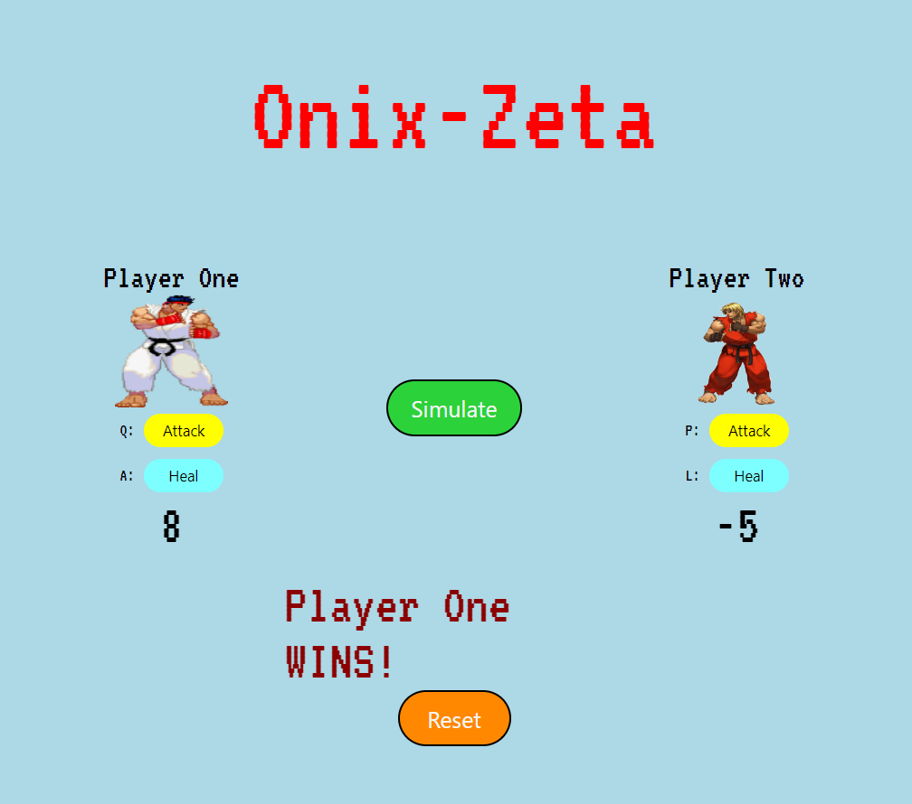
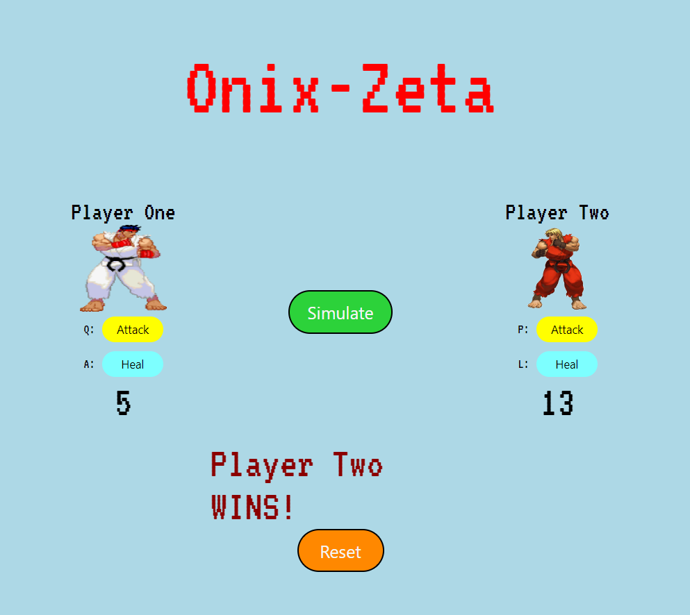
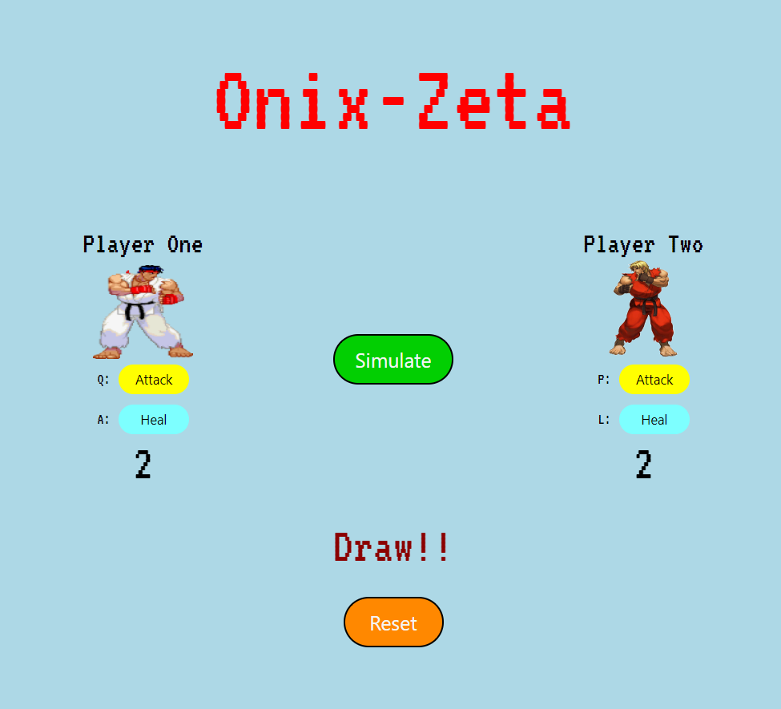

Onix-Zeta
Onix-Zeta is a retro type arcade style online fighting game. It is a classic fighting game featuring the epic Ryu vs
Sagat fight. This is a multiplayer game interface where two users can play together.
  
How To Play
- If single user is playing then just click the simulate button to enjoy the game. After
getting winner click reset button to reset the score of the fighters.
- If multi user is playing then use keyboard buttons to play the game. 'Q' and 'A' keys
are used for player 1 to fight. Similarly, 'P' and 'L' keys are used for player 2 to fight.
How To Contribute
-
Search for "subhamgcon / Onix-Zeta" in GitHub.
-
Click on Fork button to create a copy repository in your GitHub profile.
-
A new repository has been created in your profile. Now before cloning it, first update the branch by clicking
Sync Fork button so that if any changes has been made will get up to date in your forked
repository.
-
To clone your forked repository, first download git bash in your system. The link to download git bash: https://git-scm.com/downloads
-
After installation process you need to config your git with GitHub. Open the git bash terminal and type the
following commands:
- $ git config --global user.name "User Name" to set up user name.
- $ git config --global user.email "User Email" to set up user email.
-
Now your git is configured with GitHub. You are all set to commit changes from your system to reflect on GitHub.
-
First, clone your forked repository in your system by typing command in git bash terminal:
- If you want to clone it in a specific directory then type cd Directory Name. It will open
the directory in your terminal. Any changes you make will directly reflect in that directory.
- Then in that directory clone your forked repo by typing: $ git clone Project URL
-
Your forked repository is now cloned to your system in that respective directory. Now make the changes required
from your system.
-
Now you need to commit the changes so that it reflects in your GitHub. Type the following commands in your git
bash terminal:
- $ git status to check your status which files are staged to commit.
- $ git add . to stage the files for commit.
- $ git status used again to cross check if changed files are staged or not.
- $ git commit -m "short message" to commit the changes in your forked repository.
- $ git checkout -b my-branch-name to create a branch so as to avoid branch conflict while
pushing commits.
- $ git push origin my-branch-name to push the committed files in the new branch created.
- Now, the changes has been pushed successfully to your forked repository in a new branch to avoid conflicts.
- Visit your forked repository. There will be an option of Compare and Pull Request at the
top. Click that button and proceed to create pull request for asking the maintainer to review changes you
made. After all this process, your pull request is opened which you can view from the main repository.
-
This way you can contribute to this project by following the above steps.
Guidelines
-
Pull requests that are automated e.g. scripted opening pull requests to remove whitespace / fix typos / optimize
images.
-
Pull requests that are disruptive e.g. taking someone else's branch/commits and making a pull request.
-
Pull requests that are regarded by a project maintainer as a hindrance vs. helping.
-
Last but not least, one pull request to fix a typo is fine, but 5 pull requests to remove a stray whitespace is
not.
Contribution Rules
-
You are allowed to make pull requests that break the rules. We just merge it :)
-
Do NOT add any build steps e.g npm install (we want to keep this a simple static site)
-
Do NOT remove others content.
-
Styling/code can be pretty, ugly or stupid, big or small as long as it works.
Thank You!!